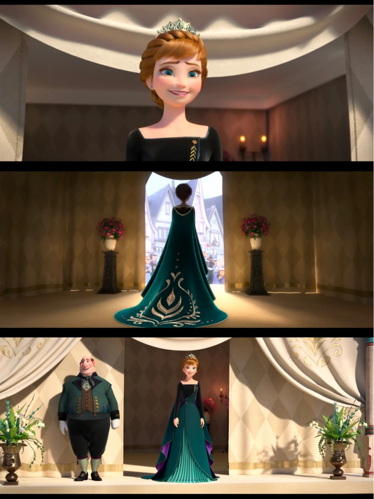
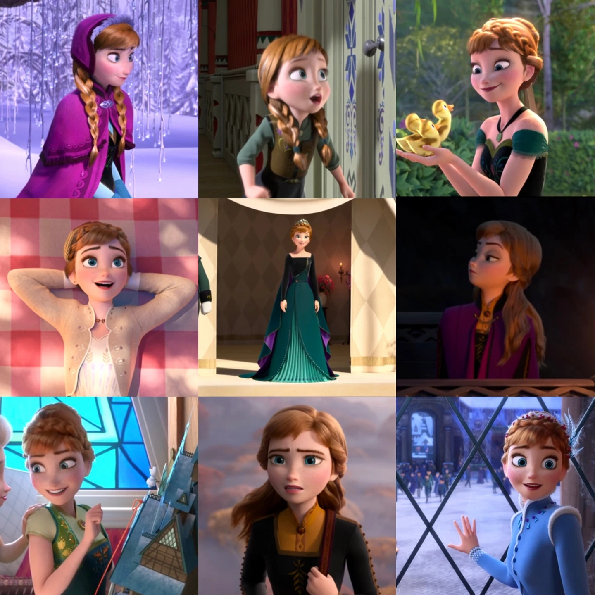
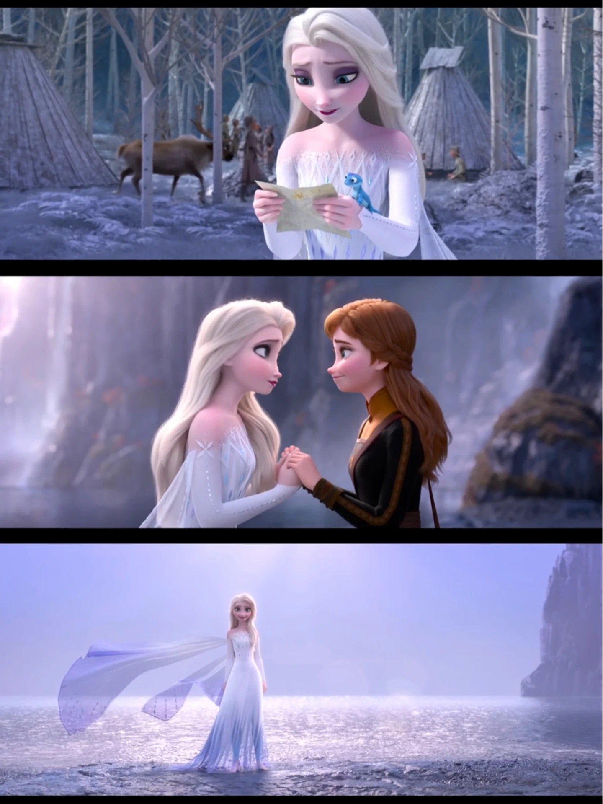
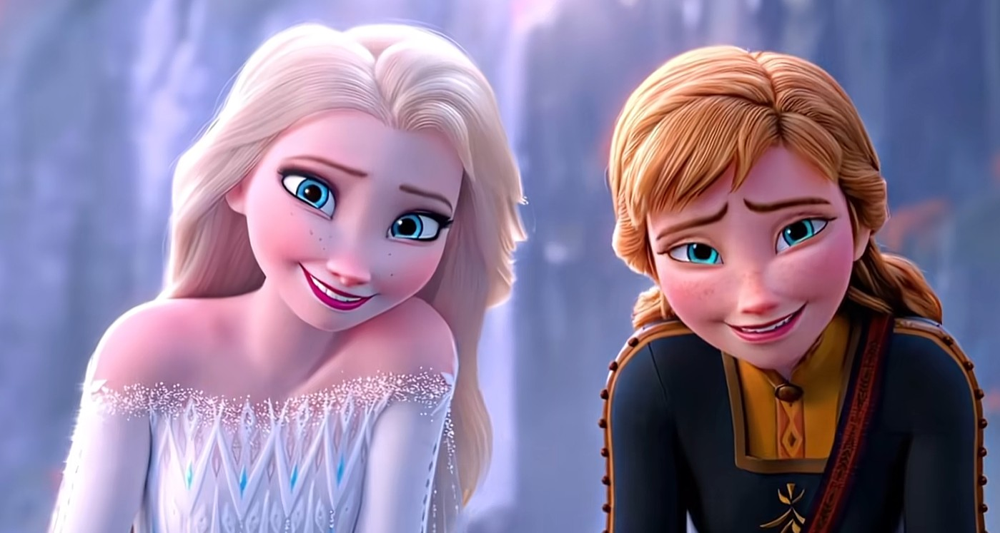

人物档案
基本信息、角色定位、琐事幕后
🌻 安娜 · 人物
人物档案
基本信息、角色定位、琐事幕后
35
本卷页数
2
主电影
中/英
双语
安娜是故事的情感核心与行动引擎。与多数童话“有超能力者是主角”不同，她自认不特别，却被立为叙事中心。设定集明确指出：安娜的角色是“连接众人的纽带”——她没有魔法，但她的乐观、忠诚与行动力，推动了整个故事的发展。

安娜阿伦黛尔女王礼服造型 · 来源：电影剧照
🎭 角色定位

安娜是故事的情感核心与行动引擎
。与多数童话“有超能力者是主角”不同，她自认不特别，却被立为叙事中心。设定集明确指出：安娜的角色是“连接众人的纽带”——她没有魔法，但她的乐观、忠诚与行动力，推动了整个故事的发展。
在《冰雪奇缘 2》中，安娜的定位进一步升华为“leader（领导者）”。她面对“国务 vs 个人生活 vs 与克里斯托夫的感情”的困惑，在失落洞窟中以《The Next Right Thing》撑过低谷，并最终接任阿伦黛尔女王。她的执政哲学是“做下一件对的事”——不是宏大的愿景，而是一步一行的坚持。
📌 琐事与幕后

- 生日： 1826 年 6 月 21 日（夏至），由迪士尼官方 Twitter 披露。与姐姐艾莎的冬至生日恰好相隔半年，被粉丝并称为“至日姐妹”。
- 白发印记： 5 岁被艾莎魔法误击面部，留下一缕铂金色发丝；这缕白发在《冰雪奇缘》结尾“冰冻之心”破除后才消失。
- 法语： 据《All Is Found》设定，安娜曾由父母教授法语，并坚持使用了一个月。
- 编织： 自称编织能手，可在一天内织好一条围巾（出自《A Frozen Heart》）。
- 《Frozen Fever》细节： 安娜发髻配有黄色向日葵与三条丝带（深绿／浅绿／蓝绿），该裙装由艾莎用冰晶暗中加蓬衬。


📌 本页要点
本页核心要点：①🎭 角色定位：阿伦黛尔女王——安娜在 F2 结局加冕为王 安娜是故事的情感核心与行动引擎。与多数童话“有超能力者是主角”不同，她自认不特别，却被立为叙事中心。设定集明确指出：安娜的角色是“连接众人的纽带”——她没有魔法，但她的乐观、忠诚与行动力，推动了整…；②📌 琐事与幕后。来源：电影正典、官方设定集与官方小说综合梳理。